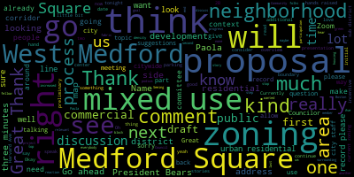
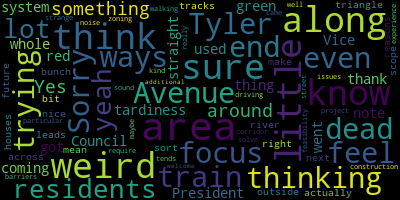
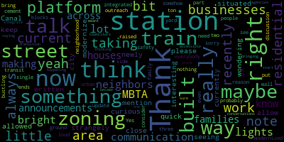

[Collins]: a draft proposal for the West Medford zoning proposal. This is the very first time we'll be looking at a preliminary proposal. It is by no means the last time we'll be looking at this proposal before it proceeds along in the process. The object of tonight is to review a presentation giving us an overview of the proposal by NS Associates that will acquaint us with the boundaries of the West Medford Square zoning district. preliminary proposals for which areas, which blocks should be which sub-districts and why the goals of this zoning and how that aligns with the overall goals of the comprehensive citywide zoning project. Folks who have been regularly attending this meetings will know this already, but the West Medford Square and also the Medford Square proposal also still in progress. These two proposals follow on the heels of kind of a more general discussion of our approach to commercial and mixed use, sorry, mixed use areas in the city. I think about a month ago, we held an initial discussion on a commercial framework for the remaining corridors and squares throughout Medford. There was a lot of public comment on that kind of bird's eye view, 30,000 foot view discussion. One comment that we did hear quite frequently, I think, in my opinion, was that people were very specifically asking for height and density in West Medford Square to support it as a more vibrant commercial square to piggyback off of its kind of unique location with the commuter rail stop. And it's true of West Medford Square as it is with the rest of this citywide zoning project that I think wherever we look as we kind of look all around the city to do these updates and these re-evaluations, our goal is to preserve what we love about these places, preserve the uniqueness of each of these space, each square, each corridor, each neighborhood. and to make sure that we're preserving what we love about those places, but not down zoning everywhere. We know that we need development, we need to support development, we need to vastly increase housing. So we're looking to do that in each square, in each corridor, in each neighborhood in a way that is tailored to each square, corridor, neighborhood. So that applies to West Medford Square as it does to each of our zoning topics. Before I hand it over to Paula I just wanted to mention because I know there are folks who are attending tonight who are maybe new to this process, because they're West Medford residents or business owners who haven't been involved in the zoning overhaul process previously just to state this in the context of the rest of the kind of the arc of the overhaul. This proposal, this draft proposal, this draft proposal process for West Medford Square has been preceded by many other topics in the Citywide Zoning Review timeline. The first package that the City Council ordained was the Mystic Avenue Corridor District that was back last fall. We then followed by ordaining a green score rubric, which updates environmental and climate resiliency related incentives and rewards for rewards for developers and major building projects. We ordained the Salem Street corridor district. Currently in process is the neighborhood and urban residential zoning topic, which is going to have its second date before the Community Development Board this month, I believe. Medford Square zoning proposal is also in progress. It's still in this committee and updates to the ADU ordinance is still in progress. It has not yet been referred out of this committee either. So this is one piece of a citywide process, and we welcome everybody's participation and involvement in as much of this project interests them. With that, Paola, if there's no initial comments from any of my fellow councilors or from city staff, I'd love to turn it over to Paola to begin her presentation about the draft West Medford Square zoning proposal. Oh, great. And I see that Councilor Scarpelli is with us as well.
[Leming]: Council Vice President, thank you. Sorry for my tardiness.
[Collins]: Thank you for being here. All right. Seeing no hands raised and the chambers are on zoom for my fellow Councilors, I'll turn it over to Paola whenever you're ready to begin the presentation.
[Ramos]: Hello, everyone. Thank you very much. I'm Paola Ramos-Martinez. I'm senior urban designer and planner at Ines Associates. And today, virtually, is with me Jimmy Rocha, spatial analyst, as well as at Ines Associates. I will share my screen. So we will be looking today at, we will read the process, the timeline, the 2025, the phase two that we are doing now, all those opportunities for public comments that we repeat every meeting in case there's anyone new to the process. We will do a little introduction of what we are doing and why. And we are right now looking at the mixed use districts, all the commercial framework that we have explained. Sorry, at a previous meeting, and we will be looking today, specifically was met for the square. Um, big disclaimer. Everything that we're showing today is still in discussion, especially for West Medford Square. We will be looking at the first proposal. We are waiting for your comments from everyone from the city staff, City Council and the public. So we can integrate that into our first proposal and we will come back with an integrated proposal. We also show certain sections that will explain exactly what you will be seeing, but also those are just examples of what could be there. It's not a proposal, a specific proposal or anything like that. It's just to understand what are the possibilities and the opportunities in the area. So we are in the third phase of this project of this rezoning of Medford based on the comprehensive plan that was done or that was published in 2022. Today we will be looking at West Medford Square. Um, these are in the planning and permitting committee meetings. Then we are also doing the city boards, community development boards. We had recently just presented the residential districts. We will be going back to the city board, um, to propose, um, to adjust the proposal with the comments that we've heard in the last meeting. Um, and we are also doing some public Q and a sessions we did in. I think one week ago two weeks ago. We did the residential neighborhoods. Um, so we're also implementing those comments in the proposal for the next city board. Um, and we will have we have updated the timeline. For May 8th, we will have the squares and ADU. So we will be talking the 8th of May about Medford Square, West Medford Square and the ADUs. So there is a chance for the public to participate. The 29th of May, we will be looking at any other corridor that we will address, like Main Street, for example. And then in June 9th, we will be talking about parking and starting the TDM discussion. So if anyone is interested, those will be public meetings where we will try to solve as much as possible any question about those topics. Um, I'm just going to go a little bit. We can talk about this if anyone has any comments about this or questions here. I'm just going to say that these are all the opportunities that the public has to tell us their opinion on these matters. We have we always presented City Council at least twice. the city Council. Um first as we will do today with West Medford Square, we will come with a proposal. Um then we get the comments from first comments from the public city staff and City Council, and we will come back with, um. Like amended proposal. Um then that if that gets voted from the city to comment from the public and then the city board can refer back to the city council and that is the other opportunity back to the city council for people to talk about it and give their opinion until that is passed. Um. So as I said, we are. We took the comprehensive, um, plan that Medford released in January 2023 and the climate action adaptation plan and other plants that were addressed before this one's on. We're taking everything that has to do with zoning on implementing those changes. So this is what this process is about. This was the vision and it was divided in quarters, residential squares, and then some institutional anchors, the residential density, low and high density, and transformational areas. So we are taking from this base vision map. We are working on each of these topics. So right now we're working on the mixed use districts. We've passed Salem, Salem Street and Mystic Avenue. Those two are already passed. We are working last time we were in the planning committee meeting, we talked about Medford Square, the first proposal. And right now we will talk about West Medford. So if we look at the existing, we will be looking at West Medford Square. Here we have the most, this is the current and existing zoning and what is possible at this moment. um the violet line is the commuter the trail um sorry the rail tracks um we have high street the greenish lines are the bus lines um and so what is allowed in this the districts that we have right now are commercial one this allows by right six stories high and it allows as residential buildings, commercial buildings four-story by right, and then other permitted structures are 15 stories by right, which is I think only hotels. General residential, that is the orange color, that is for single and two units. And then the yellow, very light yellow, that is single family, only single unit dwellings. And then we have apartment one, and that is this coral, reddish orangey color. And that is apartment one, that is three stories by right. So this is what is existing at the moment. Um. These are the, um the minimum dimensions that are required. And as we can see here is the hotel is 15 stories by right with C one. Um. Then multiple dwelling is six stories by right only residential and then other permitted Um. And this will be the proposal. So we are still using same districts as we use for the other square for, um, Medford Square. We don't have here any mixed use one, so we go and mixed use three. So we only use mixed use two, and that is the two different ones which we have mixed use to a and mixed use to be. Um and then we use urban residential to. What we want to do here is to expand the possibility of mixed use. Right now it's really concentrated along High Street. We want to extend the possibility to enlarge that and also follow the tracks with mixed use also because we can go a little bit higher and along the tracks. So we are enlarging that possibility for more business in ground floor and the height for the residential. So we have mixed use to A, that is the blue, and that would be four stories by right. And then we always have these plus two with incentive zoning. And that means that if they give something, if the developer gives something back to the community, and that is from a list of a menu that we have, and that can be affordable housing, it can be a square, it can be Spocket Park or some things that are more for this area. We will work on that later on. Then they could add two more stories to the buildings. So four plus two will be six in total with incentive zoning. then we would have mixed use 2B and this is six stories by right plus two with incentive zoning. This means eight, but it has to be with incentive zoning. So what we wanted is also not to go below what is there right now. So those six stories by right to be maintained. So in that case, we would need to go to mixed use 2B. And then we have urban residential, which we can have townhouses, three-unit dwelling, multiplex, multiple-unit dwelling, more than six units, and the ADUs that we will look into this for one, two, and three units. In this case, we are using urban residential, too, as four stories by right. Um, so we are going to look as we have done for the other areas, some sections of the different streets in this area and how that would look like. The more brownish neutral color that is the existing at this moment, and then the new proposals, we have different colors and use these reddish for the commercial, usually in ground floor. parking is gray, residential is yellow, and then we always place the incentive zoning as a dash line that could be added. So for Boston Avenue, we have four stories by right, and then two with incentive zoning. We have some study with the shadows, just to say shadows need a lot more in-depth study, because also the orientation obviously changes. So when we have a north-south orientation is very clear and the shadow it is what it is. But if we have an east and west orientation, that really changes. So this should be done in a very 3D different model. Um, we recommend for incentive zoning to accompany those with studies with shadow studies. Um, so that it benefits also the neighborhood in the surrounding. Um, it will look at, um. In section two. That is Johnson Avenue. Um, and play state road crossing the trail tracks. the rail tracks, we see that we can go higher on the rail tracks, so we propose ground floor, then cover parking, and so that we could build on top up to eight stories in total. Then if we continue on Harvard Avenue, we have on to the west of Harvard Avenue mixed use to B, so up to eight with incentive zoning, and on the east of Harvard Avenue, we have mixed use A, so four stories plus two. Really, some of the west parcels are quite big and long, and that gives opportunity to Um, really develop that area and be a lot more playful with setbacks and, um, with More density. So part cover parking is more feasible than on the right. That's why also on the right. We live it more with, um, to continue with the neighborhood. Um, Bower Street, four stories residential, will be on the east of Bower Street and on the west we have four plus two with incentive zoning. Then High Street, we have four plus two in one side and the six plus two on the other one, and in here we would need to be a little bit more careful with the shadows because it's north and south orientation. So that one will be quite permanent in this way. we need to be careful with that. These streets are not very wide, so we will need to do a little bit more study on how that sidewalks would look like. We want them to be as protected and as walkable as possible, so we need to study how much space should we have there. Canal Street, we have also the rail tracks on the west, Canal Street and how that will fit with the neighborhood. This is the existing parcel right now, residential, so go with the height higher onto the Canal Street and then on the rail tracks push that height towards the rail tracks. And those are the sections that we have prepared. We can prepare more sections for the next one. We just want to hear the first comments. What not only city staff and city council, but also the public. What are their first thoughts so that we can continue this study? Thank you very much.
[Collins]: Great. Thank you so much for that overview, Paola. I really appreciate it. So again, it's the first time that we're viewing this proposal. This is just a draft. We're not going to be taking any votes tonight. This is not the last time we're going to be talking about this. This is just the very first step in this process of iteratively creating the proposal that will then be sent on to the Community Development Board and then back to the City Council. So having taken that in, first we'll do comments and questions, suggestions and preferences from councillors and city staff. When all that has been pretty well depleted, at the end of the meeting, we will go to all public comment. I see non-voting member Councilor Lazzaro has her hand up. We'll go to you first. Please go ahead.
[Lazzaro]: Thank you. I just have a quick note. Thank you all for taking this up. Can you mention, please, where the train station is? It's really strangely situated really close to a residential area and yeah, right there. I'm just curious about It's like a newly built station. I was wondering if you could talk a little bit about that. Also, I think it's really interesting to note that on Canal Street, there are no businesses allowed right now with the current zoning and there are businesses there. This is just something that we keep seeing with our current zoning that the way that The way that our zoning is currently written just doesn't allow for the way that our city is built. So thank you for taking it up. Thanks for the work you've been doing. Yeah, and if you could just talk a little bit about how we can modernize so that maybe the train station is more integrated into the neighborhood somehow. Thanks.
[Collins]: Thank you, Councilor. And yeah, Paula, if you're able to speak to just a little bit, I know there's the train station is already woven into the fabric of West Medford Square, but if you could speak just maybe a little bit to how that factored into the preliminary design of the interplay of mixed use around the train station, where it is in the center of the square, and how we could see that being part of the transition into the residential areas around West Medford Square. I think Councilor Lazzaro was just looking for like a little bit of an explanation around how do you approach integrating the train station into the fabric of the square the surrounding residential area in this updated version of the zoning proposal. what I see from this original, from this preliminary map, is that it's, you know, mixed use to match with that heavy use that's already there, and then the gradient into mixed use too, and urban residential too, but if you could speak just a little bit to maybe the process there.
[Hunt]: One of the things that I was just clarifying also for Paola as she gets into it is that, because she was questioning the description as a train station. It is a commuter rail stop. And they have recently just, within the last month or two, opened up a platform that allows it to be an accessible. But just to clarify that it's not a building, but it is a train. It is a commuter rail stop. And one of the things that we found we've been concerned about is that while that is a rail, and typically people think of that as making things very accessible, our experience is the frequency there is not as frequent as people would like to see. So it's not anywhere close to having the frequency of even the green line, let alone the orange line. But it is rail, which makes it a lot more permanent than any of the bus lines that we have. So I just sort of wanted to clarify that because not everybody's familiar with the West Medford train station. Thank you.
[Ramos]: Yes, I was just a little confused because I just saw that there were platforms. So I was like, I don't, I haven't seen any building. I think that it's interesting that for this area, we could ask if that's what the neighborhood want to have an access or to be more clear. and that could be like one of the incentives to have a higher density in the area that there would be at least a clear entrance and a clear space within that area for the platform. That's something that the people would like we could ask in that area to be more accessible and that the buildings would be more open to that. So we could include that into the incentive zoning.
[Collins]: I'll go back to Councilor Lazzaro.
[Lazzaro]: Thanks, sorry. Yes, the station has always been there, but it didn't even have a platform. It was just cement on the ground. Now it's raised. We've recently had some outreach from the neighbors because there wasn't a lot of communication from the MBTA when it was built. This is something that I think we need to work on with the MBTA, with everybody who has put the platform there. They're very bright lights. There's a lot of loud announcements. There's no wall in between the platform and where people's houses are. It's right across the street, and there's nothing that blocks it. The reason I bring it up is because You can see it's urban residential too. It's a ton of single family houses over there and some, you know, I think some three families, some two families, but it's right across the street. And it's a train station now that's been modernized and is what it probably should have been before, but it's just, it's making announcements and it has bright lights for safety, but also that ends up being like your side yard is now like a bustling, transit station. So I think that something that we can consider as part of this discussion is like how to maybe just update the area when we integrate these conversations we can maybe as Councilors start thinking about how we talk to our state agencies about like bringing in our our neighbors and making sure that you know those communications are happening. So that's what I meant by saying that I mean it was like It's always been a transition it just recently became an accessible one. Thanks.
[Collins]: Thank you Councilor will go to President Bears.
[Bears]: I think. One of the things we're talking about and something that's been discussed for a long time is the underutilization of the lots surrounding the immediate platform. And yes, there has been these accessibility platforms have been added kind of towards the back end of the lot, but they are not a full renovation or the permanent changes that we'd like to see. at this location. Another point of note is that, you know, and this is the really big infrastructure question that who knows if and when it will be ever be answered, is that the High Street and Canal Street crossings are two pretty much the only at-grade crossings left, certainly on this part of the lower line all the way up into Woburn. So you know, fixing that problem is a much longer question. Um, in any case, my point being that the zoning of the mix to be for the lots that are currently the parking lot, the old citizens bank, that's now closed the Walgreens and the post office would allow for, I think, and I think any serious project proposal for this area would, um, look at integrating the into some sort of structure or development. So that is, I think, a long term vision that has been discussed by many people for a long time for that area. And I think hopefully In doing that, we can address some of the issues that have been presented by this kind of temporary, or it's not necessarily temporary, it's permanent, but it's not a complete fix to the accessibility issues for the West Medford commuter rail stop.
[Collins]: Thank you, President Bears. And yeah, I think it's generally not the first thing that I think to bring up when we're talking about these new mixed-use sub-districts, but I do think it's very relevant to the discussion, especially in a district like West Medford Square, that a type of sub-district like this and the type of development that allows by right allows the type of development that is large enough in scale and scope that it could be a partner to the city in the kind of transformational development that we've been wanting to do for a long time and the kind of transformational development that would allow us to cohere some of the neighborhood, just have it integrate better with the railway infrastructure. So to me, that is another That is another benefit of integrating this mixed use zoning, especially concentrated in the square and along the rail line. Go ahead, Director Hunt.
[Hunt]: If I might add on that, so one of the things I was just triple checking to make sure I wasn't misspeaking before saying it, what's really, really interesting here is that the people access this park, this train station from Placestad Road, where there's parking that's just kind of along the road, and I was checking that it's not really a parcel that's owned by the state. It's kind of looks like there's the railroad right-of-way and then there's the way parcel and the parking is kind of appears to be on the way parcel. And then on the other side the parking that's all MBTA parking that you pay the MBTA to use is all privately owned by a company out of California. And I just find that really interesting. It's the Walgreens building and the entire parking lot is three parcels. And so one of the things that Hala was pointing out to me is that there is precedent for incentive zoning to a developer to provide access to a public train station, but to develop it. Because wouldn't it be interesting if there was something taller, more robust there, but we still continue to need parking for the train station and access. So if that was, I guess I'm proposing that we put into the incentive zoning for this location specifically public additional height for in exchange for public access to the train station. Just because we'd like to see that continue. And it's unclear to me, I've never looked at, like, I have no access to the MBTA lease to know, like, what is their arrangement? How long is it? What's going on there? But it is not owned by the MBTA, according to our assessor's database, or at least we're taxing someone else for it.
[Collins]: Thank you. I think that could be a really interesting thing for us to look at and for this committee to discuss as we go forward. We've had some discussion before about tweaking the incentive zoning structure is something that we'll continue to do throughout this process. I don't think that the incentive zoning table is by any means baked and we have had some discussion about which incentives will apply citywide and which are gonna be tailored to different districts. So thank you for putting that on the record. I'm going to make a note of that. I'm sure our consultants will as well. All right. Seeing no other further hands raised from my fellow Councilors, I'll just give a Oh, I'll go back to Councilor Lazzaro. Sorry, that was a different hand. Well, the purpose of this meeting is to get our initial two cents on the record. So I'll just give my my first reaction to our first look at the zoning proposal. I think that this is a really strong place to be starting in. I feel really good about this map as the first thing that we look at in this proposal process. Like I mentioned at the beginning of the meeting, I think our goal is with any zoning proposal that's a part of this process is to match existing by right heights or build upon them where it's appropriate. And this proposal does that, as was shown in the maps in the presentation. Currently, the zoning for a lot of the center of West Medford Square is already six stories by right. There's a lot of apartment one, which is three stories by right. So I think it's really appropriate for us to be looking at this map and considering next use to be kind of as a default for a lot of that commercial center, because I think what I have heard from a lot of constituents so far is they'd like to see increased development potential in West Medford Square. And given what's already allowed by right, I think that mixed use 2B allows that. Another thing that pops out to me comparing this proposed draft with the map of the current zoning for West Medford Square is that this is a really cool opportunity for us to create a more thoughtful gradient from the center of West Medford Square into the kind of surrounding neighborhood. We were looking at the current zoning map earlier, you know, we have a lot of those six story by right three story by right, and then it's surrounded by a ring of single family. That's just a really abrupt drop off. And I think that, um. We should absolutely consider and present to the public a map more like this one that has that central ring of six stories by right. Four story by right next used to a where where it makes sense where mixed used to be doesn't make sense. And then the step down employing you are too. I think that we should employ you are too pretty intensively around here because of the commuter rail stop. Something that we've been trying to prioritize throughout the zoning map is ground floor commercial. And obviously that's something that people already, you know, I would say both love and miss about West Medford Square. We love the ground floor commercial that's there and we miss the storefronts that we used to be able to patronize that have been vacant for a really long time. And I think people are really, really eager to see those storefronts get filled again and mixed use zoning. This is true citywide is like a way for us to allow that by right while also allowing the residential units by right that will support that commercial base. And that's part of the reason that I think we should be looking at mixed use to be as a default here. A point that was raised during our ongoing discussion of neighborhood and urban residential is that with the mixed use zoning, being able to add more housing units on upper floors through those increased by right heights has a benefit in that it allows us to free up a little bit more of our green space on those lots potentially. This is, in some cases, a developer decision. It allows us to not need to use so much of the footprint of a lot For adding housing units. And I think that we are so really It gives us an opportunity to think about how does increased development increased density interplay with protecting green space in West Medford square and with the residential areas surrounding it. Um, So I have some specifics in mind where I'd like to see us consider expanding mixed-use 2B, where there's currently mixed-use 2A in this initial draft. Harbord Ave is one of those. And just a question about the map itself, actually, Paola, if you don't mind. There are some lines that are solid black line, and then there's others that are dotted black line. And then there's other areas on this map that are colored in but outside of the boundary. Could you explain like what folks are looking at with the solid line dotted line and then I assume that the areas outside of the line are the currently included in the neighborhood and urban residential proposal, but could you clarify that please.
[Ramos]: Yes, so there are some, this is the boundary that we consider in the very beginning. So there are when we have this dash is just to expand that boundary. And then when we do not have that, because it's breaking that connection, that block, we just continue to understand how that would how that will transition towards the residential. So mainly we are wanting to expand in these areas the boundary of the square. And then here is just to complete this block. And it's not just up to that lot. We could extend it as well in here. So it's all completed. for the Medford Square, but because we are also studying the neighborhoods, it's just to understand how those two will fit, basically.
[Collins]: Great. Thank you so much for clarifying that. That's really helpful. And I'll be very curious to hear from community members and my fellow councillors on their thoughts on the proposed extension of the West Medford Square boundary I know for myself, I'm looking at Harvard Ave and wondering if it makes sense to continue it all the way down Harvard Ave to where it, or it continues all the way down on Harvard Ave on the Northwest side, but not the Southeast side. Maybe that can be one area to consider. And I'll be curious for other suggestions. Yeah, Director Hunt, please.
[Hunt]: When you say continues down Harvard Ave, Not all the way down to the river.
[Collins]: Sorry, down to Boston.
[Hunt]: Right. So one of the things that I feel like is really helpful for people to understand is that a lot of this purple area is going down the railroad tracks. And this image helps us a little better than an earlier draft I had seen. There are actually commercial buildings, industrial buildings, and multifamily all the way down that purple area. And my brain keeps trying to think that that is Boston Ave. And because Boston Ave does have commercial further down next to the river. And so like I think that's something to be thinking about like there's a pocket down there and are we addressing that in our residential zoning. Honestly, it would help me to see this in the context of our residential zoning but I also see where that's confusing, because we're not talking about the residential, but having the context would be useful, and I apologize for coming up with an idea on the fly. but I think in the future it might be helpful to look at it like this and then have a second slide that also shows the other currently proposed zoning around it to give people more context so and that we can flip back and forth and say this is what we're talking about but here's the context because some of the and before we like wrap up I do I have received some public comments in email and like there's in a big picture way there's also the question about going down high street all the way to the river and how are we treating that are we looking at any of that for commercial areas are we going to continue to leave those be non-conforming because there is it's i hesitate to say that high street goes all the way to the river west medford square goes all the way to the river but there are businesses scattered along throughout um high street all the way out to the river. And I think we should think about that.
[Collins]: I agree. And I think that this is kind of the right time to be talking about that, because this map is in a very, very early stage. Go to President Bears. And also, I just want to clarify, because I see some hands raised on Zoom, we will get to all public participation. We'll do that following discussion by committee members. Go ahead, President Bears.
[Bears]: Thanks. I think just looking at this, the Dunkin' Donuts parcel and adjacent parcels, as well as that very large lot that is mostly used for parking that runs on both Harvard and Bauer. I think, yes, I understand the argument around the tracks being a place for the mixed-use 2B, but I think we could consider those as well, especially that Duncan lot, which I think could be significantly transformed to be more of an anchor for the square rather than what it is right now, which is mostly an empty parking lot. In terms of extending down High Street towards the Arlington border, personally, I think Looking at, I mean, certainly I don't mind considering it in the context of this proposal or as an addendum to this proposal, but I also think that. Really, when we say there's commercial all the way down to. The rotary we're talking about 2 commercial buildings and a gas station. On a couple across 4 or 5 blocks, so it might be more of a candidate for. The mixed use nodes that we're talking about. as it could be part of that process. Um, I just think that the context is a little different.
[Collins]: Great. Thank you, President Bears. And, um It is true that in addition to these kind of more major squares and corridor discussions, we are also going to have a discussion about kind of mixed use nodes that are very intentionally in the fabric of neighborhoods that are smaller in scale ways so that there can be by right you know, amenities, neighborhood stuff, convenience stores, restaurants, et cetera, in neighborhoods outside of just the major squares to be useful to people. So that, I think this is a good time to be talking about that and we can continue to discuss if it makes sense as part of this process or if it should be part of the neighborhood nodes process. I'm gonna go to Planner Evans.
[Danielle Evans]: Thank you, madam chair. I'm Daniel and senior planner. I was just looking at the map and. I was thinking that probably the 2 parcels that are. slated for mixed use 2A behind the St. Ray's school and the church. Those are two surface parking lots. And I was wondering if those should just, and they're also owned by the Archdiocese as well as another two parcels that extend all the way to Boston Ave. And I'm wondering if those two interior surface parcels should have the same zoning as the mixed use 2B to, have the same zoning at least there. Sometimes it gets complicated when you have split zoning for the same property owner. There's also the former convent, which is the preschool, which is, I think that's three stories. So just thinking like if we're looking at the different ownership and parcels that could potentially be combined and to have them to be the same zone. Thank you.
[Collins]: Thank you very much. Okay, so broadly, it sounds like we're talking about. If we have reactions to specific sub-district assignments in this early draft, and also initial thoughts on where the district boundary makes sense and where we might want to see it extended or earmarked for a future discussion as part of the mixed use neighborhood notes discussion. And I also, because I forgot to, I do think Director Hunt makes a really good point, especially now that we're you know, in earlier parts of this process, we didn't have kind of the fully realized neighborhood residential proposal to look at. Now that we do, I think it would be helpful in future discussions if we could look at those side by side, at least in one slide. I think it could help us bring up some things that we'd want to discuss. So just for now, my last two cents on the topic of where we might extend this boundary. I think I'd I'd put on the record that yeah I would see kind of extent so the. the side of Harvard Ave closer to the river. I could see that being made into a parallel line extending the district boundary all the way down to Boston Ave. And I would want to consider that, just have a discussion about that in the context of the commercial, the restaurants that are on the other side of Boston Ave. Because I think that could be relevant as well. I know there's a lot of beloved restaurants right there. And they would kind of, I think they're relevant. I think that that kind of mini commercial area is relevant. President Bears, is that a new hand raised or if it is, feel free to go ahead. Okay, thank you. Are there any other comments at this time from councilors or city staff initial reactions to this draft? Things we wanna get on the record, suggestions, questions for how this draft should evolve. Next. All right, hearing none, we can begin with public participation. Unless there's anything else that city staff want to add. So we will just give me a second to get set up with my.
[Hunt]: Oh, go ahead, Director Hunt. Sorry, we were just discussing an area that we think we might want to recommend adding. Okay. So if you follow Canal Street from High Street and then it crosses the train tracks, the triangle that it makes between Canal Street and the train tracks and the river, what's in there now is a bunch of is a number of condos and some houses that are probably mostly multifamily. And so the thought was to add that into the red area, the purple area. Sorry. either Urban Residential 2 or Mixed Use 2B, and Paola will take a look at that to see what, I don't know that it makes sense to put Mixed Use down there. So one of the things that I'm aware of is that our GPS often takes us on Canal Street there to cross the train tracks. So I don't know that we'd want to add a commercial there, but we might want to make that an Urban Residential 2 area.
[Collins]: Thank you for flagging that. Go to President Bears.
[Bears]: Thank you. Yeah, I think we need to think about that. If folks remember the fire on the kind of lower end of Canal there because it's a dead end because of access issues. I know that it's just a strange little area in terms of access and developable capacity. And I think we need to think. Another step there, and at least review some of the communications that we had with the building department and the fire department around some of their concerns about. that structure and even just the impact of rebuilding that to its status before the fire and safety and accessibility issues. I just think it's a kind of a unique question. I'm not saying we shouldn't do it, but I think we should have that conversation because I know some concerns were raised because of that incident.
[Collins]: Thank you for flagging that. Oh, is that a hand? Go ahead, Councilor Leming.
[Leming]: Sorry, I was used to the green thing coming up, but it just went straight to red, so I'm not sure.
[Collins]: I was also thrown off by that. Go ahead.
[Leming]: I'm not sure what the system is. No, I just got to note that whole area, not only that triangle, but I think some of the houses along right next to the train tracks on like Tyler Avenue, it's a little bit of a weird area for a bunch of reasons. I'm thinking like, I mean, this is outside the scope of this, but even trying to make some ways so that that dead end isn't sort of a dead end, but actually like leads across the river, that would be a nice future construction project. I don't know about the feasibility of that, but I feel like that area would require particular focus. I know that even the residents along, yeah, I was just kind of thinking about this like weird little corridor along, this weird little street on Tyler Avenue because I know the residents there have like a lot of issues with train noise as well. So I was trying to think of ways to like maybe do something with like sound barriers, but I don't think that's like that just came up a lot, but I'm not 100% sure if that's something we could really solve with zoning. But yeah, I do feel like just walking around this driving around this area tends to be a very strange experience. So any additional focus on it would be welcome.
[Collins]: Great, thank you for that Councilor Leming. Any additional notes at this time by city staff or committee members? Seeing none. All right, great, well, I know there are a lot of people here to give their thoughts on this preliminary proposal, so we'll go to public participation. We will switch between podium and Zoom, though the people on Zoom vastly outnumber the people in the council chambers. Every participant will have three minutes to speak, and I'll endeavor to remember to alert people when they are coming up on 30 seconds left. So if you're in the chambers, feel free to just line up. Go first to Emily on Zoom. Please give your name and address for the record and I'll start the timer for three minutes. Just asked you to unmute.
[SPEAKER_04]: Sure. Emily Prada from 19 Johnson Ave.
[Collins]: Go ahead. Thank you.
[SPEAKER_04]: Sure. Yeah, I just wanted to make sure that like, you know, keeping the train station in West Redford really is vital to the area, but also making sure as that area gets developed, that public access to that platform is maintained, even if, you know, residences are sort of built up around their commercial property, so that there are public access ways from all directions, because having people, you know, have to reroute and go around could actually be deterrence to taking the public transportation for the commuter rail. I think also making sure you maintain parking lots because, you know, people drive there from, you know, a mile or two miles away from within Medford as well. So making sure that's maintained with any sort of rezoning as well. Um, I'd also be really interested in the overlays that you said, um, those two concentric, um, the white spaces for those two concentric, um, circles in the gray to really sort of understand, like, is it residential beyond there or is it, uh, other mixed uses, uh, zoning that you guys are talking about? Um, as well, I think that would really help sort of the context of it, um, to be able to understand. I'm kind of curious in that first sort of circle, is that meant to be? other mixed use areas or is that residential?
[Collins]: Great, thank you and please feel free if you have more questions, feel free to say them all at the same time. We can get to your questions at the end of your three minutes. Nope, that's all. Okay, great. Thank you so much. Great question. So the two circles and just saying this for anybody who doesn't know it already, the inner one is a the quarter mile radius from the train stop and the outer circle is the half mile radius from the train stop. And I believe that everything not included in the squares proposal, everything that's not colored in would be encompassed by our neighborhood and urban PB, Lisa Smith-Miyazaki, she-her-hers, she-her-hers.
[Ramos]: Yeah, so you're exactly right. We will look into what are the existing commercial uses and where are they, so that if we need to extend some of these mixed uses or create some more local kind of corridors or maybe include them in the commercial nodes that we will discuss later on. So to see if there are any clusters in certain areas and how to make those conforming. So we will be looking into the existing and see how we can integrate those.
[Collins]: Great, thank you so much, Paola, and thank you, Emily, for your comments. Go next to the podium. Name and address for the record, please. You have three minutes. Oh, sorry.
[Navarre]: There you go. Hello, William Devar, 108 Bedford Street, Apartment 1B. Basically, I support the proposal. I'm glad we're seeing more density proposed than what we saw previously. it's important that housing go up in the area to address the regional housing crisis, but also to support the desired business district. I agree, a little more 2B would be good, especially, again, along the second side of Harvard Street that was left out. And I sort of agree with the idea of having sort of a corridor-type situation going, extending towards the river along High Street. And the reason for that, is because when we heard we were losing the number 80 bus, one of the things that kept coming up was that West Bedford values its connection to Arlington Center. And I went, whoa, I didn't realize those were near each other hardly. Well, they are. It's 0.8 miles from Grove Street intersection to the Catholic church that marks when you know you've arrived at Arlington Center, only 0.8 miles. yet the design language etc doesn't tell you that. If there was a mixed-use corridor going down beyond just little nodes where there's already businesses in a corridor, that would tell you, you know, you follow this way, you remain in an urban area, you're not walking out to the suburbs and exurbs, you're walking to quite a nice urban area at Arlington Centre. So I think almost for like for like that kind of reason. And because you're along that nice 80 bus that we were so afraid to lose through the better bus reform, reformat, whatever it's called. We're gonna get screwed out of the 80 bus. We love the 80 bus, we should be having lots of stuff along it. And yeah, that to be, indeed, should be the sort of the baseline for this area, because we need lots of housing, and so on in order to make sure that the commercial district works as enough customers. Thank you.
[Collins]: Thank you, William. All right, we'll go back to Zoom. We'll go to Jennifer Yanko. I'll ask you to unmute. Name and address for the record, please. And you have three minutes. Go ahead, Jennifer. Oh, we can hear you now. Go ahead. Name and address for the record, please.
[Yanko]: It's not allowing me to put my video on, but maybe that's OK. That's all right. I want to echo this concern that Emily expressed about, it's hard to grasp what we're dealing with for two reasons. One is that we don't really know what the zoning is in these circles, the inner, the quarter mile and the half mile. It would be helpful to know because they're contiguous with some of the proposed areas. And also, we don't really have an image of where the businesses are, the commercial establishments that are apparently, if I understand correctly, out of, out of zoning, they're not complying with the zoning. But because we do have various commercial establishments in areas that appear to be zoned as residential. So anyway, it makes it harder for the layperson to understand that. That said, I would support the idea of extending this sort of corridor down High Street I mean, we already have a few businesses on High Street as we go towards the river. I think that would be important to make that mixed use of some sort, which would allow us to have a bit more choice as that area is developed. And the last thing that I wanted to say is, and this may be slightly different, there are a lot of people in this neighborhood, I'm one of them, and in many neighborhoods throughout Medford and other cities, who have multifamily homes that could be, if the zoning allowed, could be made into more units. But the current zoning does not allow that. And that is really working against creating more housing. So those are my comments. And thank you for all this work. I really do support rezoning the area and the proposal that you have made. As I said, I would like to see it even expanded further. Thank you.
[Collins]: Great, thank you so much, Jennifer, for your comments. And I just wanted to highlight, we will work on getting a version of the updated proposal superimposed on what we did for Neighborhood and Urban Residential when we were further along in the process as we superimposed the proposal on top of the current zoning and on top of, yeah, on top of the current zoning. I'm sure that we can do that for this proposal superimpose it on top of the current zoning, and also situated within the context of the neighborhood and urban residential zoning which will surround it. I think that'll be helpful for folks. In the meantime, President Bears did pop into the chat. the section of the City Council's public portal where you can see the proposals for the neighborhood and urban residential zoning. So everybody, please do check that out. And hopefully that will give everybody a good start on absorbing some more of that context. And then I think we can, I'm sure we can follow up with super superimposed imagery. Go ahead, Paola.
[Ramos]: I'm just to remind. Um, thank you, Jennifer. Those are great comments. Um, we proposed for these areas. Um, I believe it was neighborhood residential three, which allows up to three units. Um, in the big majority of this area because we received quite a lot of comments during the public meeting and any of the public hearings that we had. we are reviewing that. And that's why right now we didn't place any of those under because we are reviewing those. So we will be showing a previous version that we are thinking already in changing. So the next time we will bring all these reviewed areas with the residential, probably with higher density that you would see in the present proposal. So I just wanted to point that.
[Collins]: Great. Thank you so much, Paola. And just while we're talking about the other materials on neighborhood and urban residential that are available right now, there's the link in the chat that President Bears dropped. And then if anybody looks that up and fails to bookmark it and wants to see it again, if you go to medfordma.org slash zoning, those same diagrams are available there. All right, we'll go to the podium. Yes, we'll go back to the podium. Name and address for the record, please. And you will have three minutes.
[Goldstein]: Hi, Sam Goldstein, 29 Martin Street. Want to just voice my general support for this proposal and excitement around it. I think my feedback is probably similar to a lot of feedback from others tonight around this. You know, in particular, you know, I'd like to see, you know, good density in the area. And, you know, as others have sort of noted, I kind of wonder about, you know, what the areas along kind of the busiest roads leading into Um, the area would look like, uh, you know, I support, uh, you know, more density and potentially, um, you know, commercial use along High Street heading towards Arlington Center. In particular, you know, I think the southern side of that road right now does have a pretty good, you know, number of storefronts along it. It would be nice to see, you know, maybe some of that developed into, you know, maybe some more robust, you know, mixed use. Likewise, you know, I know not immediately, at least off the top of my head, clear like what Boston Ave will end up looking like under the proposal, but I think Boston Ave also, you know, has some capacity for more density and mixed use potentially. And I'm kind of curious what the portion of a playstead road leading out of the square might look like, if there might be some more height there or what. But yeah, generally excited about this, looking forward to seeing how the city grows. Thank you.
[Collins]: Thank you very much. All right, we will go next to Gaston. Name and address for the record, please. You have three minutes.
[Fiore]: Thank you. I just wanted to say some comments. So the first one is that the triangle that Dr. Hunt mentioned, I think that would be great to develop it a little bit more. Also, I was thinking that still West Medford Square seems slightly undeveloped compared to some of the, for example, Medford Square next to the highway allows up to 12 stories high. Here we go only up to eight, and even considering with respect to Salem. So Salem with the amendment that Matt Deming proposed and got voted in, It actually has mixes two up to six with incentive zoning. And then here, we're only going up to eight with incentive zoning. So there's not that much difference. However, Medford Square has a humongous difference with everything else, which is that it has a West Medford Commuter Rail Station, which is one station away from North Station, which is in the heart of Boston. And that's around only 10 minutes. by the commuter rail. So to me, it looks like we still need to develop this area more, maybe even with mixed use three. So going up to 12 stories, if the terrain allows, because of the commuter rail. The commuter rail here is key. And then also within, so if we look at the quarter mile radius, so that drops into, I have actually the zoning here into neighborhood residential three, and I see no urban residential one. We didn't, in particular, we look at place that going sort of Northwest and maybe potential a little bit more Northeast. I think it would be nice, definitely within the quarter mile radius, nothing beyond that, to use some urban residential one. I think that would also help to sort of make the transition down to neighborhood residential three. And so remember the urban residential one would allow the multiplex, so four to six units, which neighborhood residential three does not. So again, comparing, for example, with the green line station, there we have urban residential one. And then as we have heard from the residents over there, there's plenty of single family homes there, which would become non-compliant. So I think to make it more fair, the urban residential one in some areas on here would make sense. And other than that, it looks good. So I think it was a huge improvement from last meeting. So I thank everyone that made this possible. But again, I think because we had the commuter rail station, which is one station away from the heart of Boston, I think we need to sort of increase this density as much as we can. Thank you so much.
[Collins]: Thank you very much, Gaston. We will make sure to consider your comments. Great. Go next to Harrison on Zoom. Name and address for the record, please. You'll have three minutes.
[Harrison Green]: Hello. Harrison Green to Ronaleigh Road in the vicinity of West Medford Square, a little bit north. So I am in support of this zoning. I'm in support of an expansion of the perimeter as well. And while I see West Medford Square being like the focal point of the square being the commuter rail station, I also see it being a bus hub and a bus transit opportunity. So inevitably, when this conversation becomes about parking, as we add more units around, I think that we should be focused on where the bus lines are now and where they are going to be, which is down High Street more and to Boston Ave. I see the westernmost part of this map being, I would imagine that should be as large a node as, or close to as large a node as the intersection of Playstead and High Street, so. Additionally, I think the border should extend past just Boston Ave and go into the next block so that all of Boston Ave can be developed as higher density instead of kind of single family on one side and then multifamily on the other. Thank you for putting this together. It's really getting there and looking great. Thanks for the work you've done.
[Collins]: Great. Thank you so much for the comments and suggestions, Harrison. Go next to Marilyn on Zoom. Name and address for the record, please. You'll have three minutes. All right, I'm going to click the ask to unmute Marilyn, you should see a button appear on your side. Oh, there you go.
[SPEAKER_01]: Marilyn Davidson at 80 Harvard Avenue. I'd love, I'd love to see more density. I'd also like to see more commercial use. Two things, when you start building really tall buildings along a narrow street like High Street, you're going to end up with a canyon, which might not be all that attractive. So I would be in favor of the density as a sort of setback kind of thing. maybe putting the first floor on the street and having a setback for the upper stories, which is done in other cities. Number two, the congestion around High Street because of the commuter rail crossing can be really amazing. So adding a lot of density, you have to figure out how you're going to handle the traffic. So those are my two points.
[Collins]: Great. Thank you so much for your comments, Marilyn. All right, go next to Caitlin. Name and address for the record, please. You have three minutes.
[Kaitlin Robinson]: Hi, my name is Caitlin Robinson, 31 Everett Street, and I just want to voice my general support for this proposal. I do agree with previous commenters who have talked about trying to increase the density, expand the perimeter, as well as creating more of a corridor toward Arlington Center. I also want to, and I know that this is going to be a separate thing, but again, express my concern about parking minimums and how if we retain the parking minimums, that it might work against some of the goals of this. So I hope that we will look at eliminating those. Thank you.
[Collins]: Thank you so much for your comments, Caitlin. All right, going next to Judith. Name and address for the record, please. You have three minutes.
[Judith Weinstock]: Hi, it's Judith Weinstock at 144 Burgett. I don't live in this zone, as you all know. But I also, the gal right before me, I could imagine if all the commercial work is done along High Street and ultimately the parcels that are currently parking lots are not owned by or leased by the MBTA and they're owned by a private person, that the parking for the commuter rail stop, I would think, would be really compromised in those areas. I don't take the commuter rail, but I would think that as you build and build and build up, you know, if it's going to become a drop off station, like, some of the T stops are that's 1 thing, but I would think that those lots that are currently used for parking are in jeopardy as this program grows. Um, mostly because those commercial areas will want parking for their commercial, um, retails, retail shops, but also because the owner of those, of that lot will know that it's worth a small fortune. So that's all. Thank you again.
[Collins]: Great. Thank you so much for your comments, Judith. Really appreciate it. Um, Something that was discussed in brief when we were looking at the section studies just earlier, and we kind of spent a little more time talking about this in the context of West, sorry in the context of Medford Square actually something that we'll revisit. I'm sure both with Medford Square and West Medford Square are opportunities with the mixed use zoning for covered parking. Obviously, I hope it goes without saying, but it shouldn't that, you know, certainly in West Medford squares and elsewhere, we're conscious that we really need to prioritize land area for uses for residential for commercial, but we're not unaware of the need for parking, both for the active business area and for the commercial and for the commuter rail. And Paula and Emily from the associates team so far I've done a really great job of presenting some I think novel and very compelling ways that we could integrate parking into the fabric of some of these mixed use developments so that it doesn't. doesn't necessarily monopolize some of the area that could be put to productive use and developments, but does retain some parking in and around the square for those who will continue to need it. I see that Paula has put up one of those slides on the screen. Do you want to speak to that just briefly, just kind of an overview of what some of these mixed uses enable in terms of covered parking, just for context?
[Ramos]: Yes, so these are proposals that when we. This is not what we proposed to be exactly, but we always showed or tried to show some of the possibilities that could happen in this area. We always think that if we allow more density, then having cover parking starts to be feasible. What we can also introduce is whenever we have public that we could also have public parking as an incentive. And so in these areas of mixed use that they could reach another story, they provide a certain amount of parking that can be for the public. Some of the of the ones that are near the train station that could be For people using the commuter rail or for people using the commercial areas. Also, the idea is to make these more walkable in that sense that if we densify and have more residential in this quarter mile and half a mile. a lot of the people would go walking to the commercial area, so people would use less the car, since right now it's quite low density in the area, because we have general residential that it meets only two units, and then single family districts. We are now converting that into at least multi-family. So the idea is that we would have a lot more residential to use these businesses, and that is people walking towards the commercial. So try to look from those points of view.
[Collins]: Great, thank you so much for that overview. We'll certainly, we can revisit that topic and those possibilities. I'm sure that we will in future discussions. Great, thank you. I see no further hands raised. So there are just a few emailed comments that I'm going to read into the record. This one is from Dave McKenna to Vine Street who requested this read aloud. Dave says, I am very supportive of the changes that have been made to allow more development in West Medford Square. However, I would like to make a few additional suggestions. You are too should be allowed to go to four stories. The area under consideration could be expanded one more block to the west with mixed use one, which is three stories by right, plus one story with incentive zoning. On the south side of High Street at the west end of this plan, there is already mixed use one block beyond the limit of this plan. On the north side, this is within a stone's throw from the commuter station, and I believe MX1 would be appropriate additional density while stepping down from the center of the square towards the residential neighborhood. The area under consideration could also be expanded to the east one to two blocks with MX1 to step down away from the center of the square and expand the corridor. I think the MX1 doesn't have to require ground floor commercial, it could be left optional so that based on the evolving needs of the area, it could be residential or mixed use. That was Dave's comment. There are a couple others that indicated they wanted to submit comments tonight, but they didn't specifically say they wanted their comments read into the record, so I will read them but not use names, just in case the commenter would not have preferred that. One says, Since I can't attend the committee meeting tonight, I'm submitting this. While I applaud the citywide zoning effort all around, I would like to see the proposal for West Medford go further to increase density in the proposed district and to expand the boundaries of the mixed use and urban residential district. In particular, I would like to see all of High Street from the Brooks School down to the Rotary by the river, as well as Boston Ave from High Street to the river, be some combination of mixed use and urban residential. This would be reflective of the land uses that are there now and create more opportunities to expand housing in an area that has good transit service. And the final one in my inbox. simply reads, any chance the business on Harvard Ave could change to mixed-use 2B? Currently, it's mixed-use 2A. Go ahead, Paola.
[Ramos]: Just to mention about Harvard Avenue, there are, we have the fire department and Dunkin Donuts and between those two lots that are two very beautiful historic buildings. So that is why that side is a little bit lower. Also, we have then the connection with the neighborhood. We can study to see if we can go higher. But the idea was to protect those. Also, those lots are a lot smaller. So that was the process behind leaving that a little bit lower to A instead of to B. But we can absolutely look at it.
[Collins]: Great. Thank you, Paola. All right, well, we've gotten a lot of reactions and suggestions on the record this evening. I think that's great. I feel like there's a general coherent interest in continuing the conversation around where these boundaries make sense and where we'd like to see them extended. And we've gotten a lot of suggestions for where certain sub districts could be tweaked to go from 2A to 2B, from 2B to 3. And a lot of interest in the next time we look at this, considering it side by side with the context of the residential areas surrounding which will also help us continue the discussion of where this district boundary should end and where we should be making that shift from mixed use to residential and how dense that residential should be. So this is great. I'm excited. Thank you all so much for a very substantive discussion. Lots for NS associates and city staff and myself to take back and make sure it is considered and incorporated into the next version of this proposal. So since I don't see any additional hands raised from members of the public or committee members, I'll just give a quick overview of next steps. We will meet in committee about this proposal again. I think, Polly, you may have said in your presentation like a draft next date for this proposal, but if you did, I missed it. We have a number of proposals that are all currently in progress. Sorry, did you have a date for that? I want to say it if you did, but it's okay if you don't.
[Ramos]: So we are proposing to the next planning permitting committee meeting to come back with the proposal for sorry. I'm trying to yeah.
[Collins]: No, that's okay. I'm sorry.
[Ramos]: I don't have a proposal of the squares again. So to look at what we talked about Medford Square in West Medford, um, and also the 80 years so that we can look at those, um, and maybe continue the discussion or to be referred to the city board.
[Collins]: great. Thank you so much. So we will be discussing this proposal at our next planning and permitting committee, and it sounds like probably alongside the Medford Square proposal as well. Those will be April 30. All of these dates will be updated on the city's zoning website. And so we'll have another chance for committee members and members of the public and city staff to discuss them in this public meeting before the committee will potentially take a vote to refer it to the Community Development Board, where we'll have public hearings. So please save the date, April 30, if you want to be at the next Planning and Permitting Committee meeting about this topic. Myself with President Bears, Director Hunt, and NS Associates are also working to schedule our next several public Q&As about this topic and many others, as you can see on this timeline in green. We are working out locations for those, so as soon as we have all of the details firmed up, we'll be sure to be publicizing those. Are there any additional questions or comments before we close out for the evening? Seeing none, thank you all so much for your questions and suggestions, and thank you so much, Paola, for the presentation. Is there a motion? hear a motion to adjourn from Councilor Leming. Is there a second?
[Bears]: Second.
[Collins]: Seconded by President Bears. Mr. Clerk, when you're ready, please call the roll.
[Unidentified]: Councilor Callahan?
[Goldstein]: Yes.
[Harrison Green]: Councilor Leming? Yes. Councilor Scarpelli?
[Leming]: Yes.
[Harrison Green]: President Bears?
[Leming]: Yes.
[Collins]: Yes. Five in favor, none opposed. The meeting is adjourned. Thank you everybody.
|
total time: 30.34 minutes total words: 4840  |
total time: 1.65 minutes total words: 264  |
total time: 3.03 minutes total words: 445  |
total time: 4.49 minutes total words: 619 |
{kind=link}
{kind=link}
{kind=link}
{kind=link}